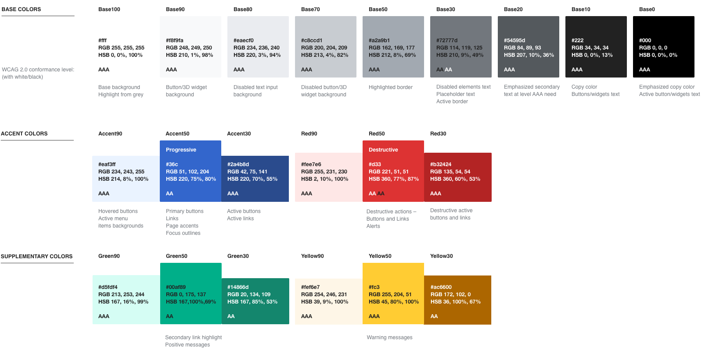

Visual Style
Colors
The color palette represents our character and brings a hint of freshness to our products.
Making the content readable for everyone was our main goal. Accessibility considerations have been our top priority. Each color in the palette indicates its WCAG conformance level (“AA” or “AAA”). It's based on colors' contrast against white or black.
Base colors
Base colors define the content surface and the main color for content. Different shades of paper and ink are useful to emphasise or de-emphasise different content areas.
Base colors go from pure white (Base100) to true black (Base0). Intermediate shades of grey include a tint of blue for greater harmony with our accent color.
When applying text on a surface, you need to check the color contrast between the text and the background:
- Base100…50 are safe text colors for a black surface.
- Base30…0 are safe text colors for a white surface.
-
Base100 AAA
#fffRGB 255, 255, 255HSB 0, 0%, 100%CSS --wmui-color-base100LESS @wmui-color-base100 -
Base90 AAA
#f8f9faRGB 248, 249, 250HSB 210, 1%, 98%CSS --wmui-color-base90LESS @wmui-color-base90 -
Base80 AAA
#eaecf0RGB 234, 236, 240HSB 220, 3%, 94%CSS --wmui-color-base80LESS @wmui-color-base80 -
Base70 AAA
#c8ccd1RGB 200, 204, 209HSB 213, 4%, 82%CSS --wmui-color-base70LESS @wmui-color-base70 -
Base50 AAA
#a2a9b1RGB 162, 169, 177HSB 212, 8%, 69%CSS --wmui-color-base50LESS @wmui-color-base50 -
Base30 AA / AA
#72777dRGB 114, 119, 125HSB 210, 9%, 49%CSS --wmui-color-base30LESS @wmui-color-base30 -
Base20 AAA
#54595dRGB 84, 89, 93HSB 207, 10%, 36%CSS --wmui-color-base20LESS @wmui-color-base20 -
Base10 AAA
#222RGB 34, 34, 34HSB 0, 0%, 13%CSS --wmui-color-base10LESS @wmui-color-base10 -
Base0 AAA
#000RGB 0, 0, 0HSB 0, 0%, 0%CSS --wmui-color-base0LESS @wmui-color-base0
Accent colors
Accent colors are used to emphasise actions and highlight key information. Blue is a natural choice in our context, where it has been the default color used for links, conveying the idea of action.
There are three shades provided for situations where you need a lighter (Accent90), regular (Accent50) or a darker (Accent10) version.
Accent50 provides a blue which is suitable to be used for text and as background. When used as link text it provides sufficient contrast with black text to notice the difference. When used as background, it provides enough contrast with white text to keep the text readable.
-
Accent90 AAA
#eaf3ffRGB 234, 243, 255HSB 214, 8%, 100%CSS --wmui-color-accent90LESS @wmui-color-accent90 -
Accent50 Progressive AA
#36cRGB 51, 102, 204HSB 220, 75%, 80%CSS --wmui-color-accent50LESS @wmui-color-accent50 -
Accent10 AAA
#2a4b8dRGB 42, 75, 141HSB 220, 70%, 55%CSS --wmui-color-accent10LESS @wmui-color-accent10
Utility colors
Red, green and yellow are utility colors. They can act as accent colors bringing the additional meaning that is commonly associated with them.
-
Red90 AAA
#fee7e6RGB 255, 231, 230HSB 2, 10%, 100%CSS --wmui-color-red90LESS @wmui-color-red90 -
Red50 Destructive AA / AA
#d33RGB 221, 51, 51HSB 360, 77%, 87%CSS --wmui-color-red50LESS @wmui-color-red50 -
Red10 AAA
#873636RGB 135, 54, 54HSB 360, 60%, 53%CSS --wmui-color-red10LESS @wmui-color-red10
-
Green90 AAA
#d5fdf4RGB 213, 253, 244HSB 167, 16%, 99%CSS --wmui-color-green90LESS @wmui-color-green90 -
Green50 AA
#00af89RGB 0, 175, 137HSB 167, 100%, 69%CSS --wmui-color-green50LESS @wmui-color-green50 -
Green30 AA
#14866dRGB 20, 134, 109HSB 167, 85%, 53%CSS --wmui-color-green30LESS @wmui-color-green30
-
Yellow90 AAA
#fef6e7RGB 254, 246, 231HSB 39, 9%, 100%CSS --wmui-color-yellow90LESS @wmui-color-yellow90 -
Yellow50 AAA
#fc3RGB 255, 204, 51HSB 45, 80%, 100%CSS --wmui-color-yellow50LESS @wmui-color-yellow50 -
Yellow30 AA
#ac6600RGB 172, 102, 0HSB 36, 100%, 67%CSS --wmui-color-yellow30LESS @wmui-color-yellow30
Additional colors
Some use cases, such as charts and data visualization, may need a broader color palette. Make sure to aim for level AA contrast (4.5:1) when extending the default palette. Also try to test how they are perceived at different color vision deficiency conditions.